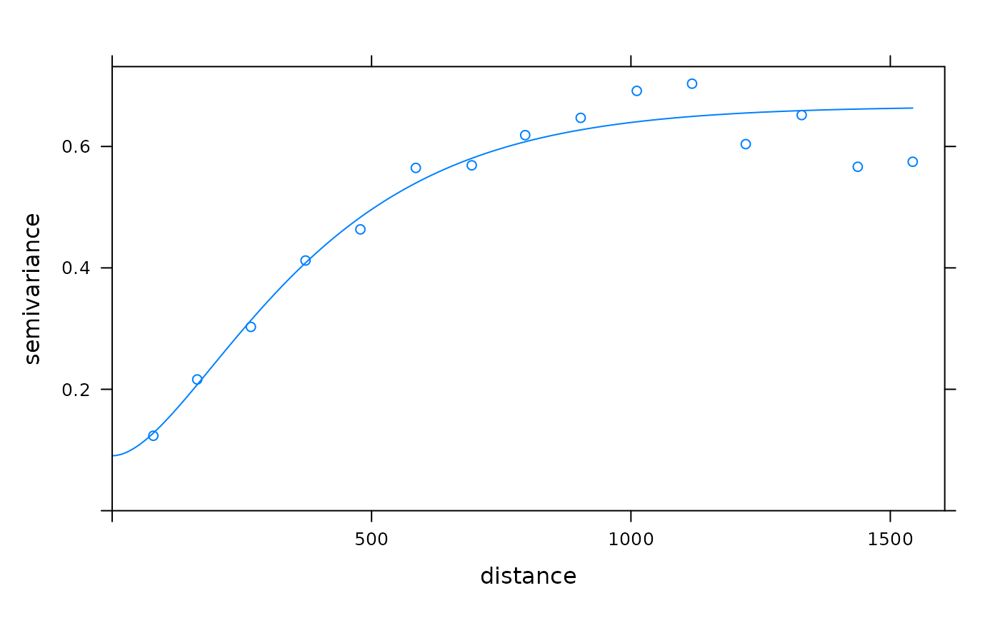

Fit a Variogram Model to a Sample Variogram
fit.variogram.RdFit ranges and/or sills from a simple or nested variogram model to a sample variogram
Usage
fit.variogram(object, model, fit.sills = TRUE, fit.ranges = TRUE,
fit.method = 7, debug.level = 1, warn.if.neg = FALSE, fit.kappa = FALSE)Arguments
- object
sample variogram, output of variogram
- model
variogram model, output of vgm; see Details below for details on how
NAvalues inmodelare initialised.- fit.sills
logical; determines whether the partial sill coefficients (including nugget variance) should be fitted; or logical vector: determines for each partial sill parameter whether it should be fitted or fixed.
- fit.ranges
logical; determines whether the range coefficients (excluding that of the nugget component) should be fitted; or logical vector: determines for each range parameter whether it should be fitted or fixed.
- fit.method
fitting method, used by gstat. The default method uses weights $N_h/h^2$ with $N_h$ the number of point pairs and $h$ the distance. This criterion is not supported by theory, but by practice. For other values of
fit.method, see details.- debug.level
integer; set gstat internal debug level
- warn.if.neg
logical; if TRUE a warning is issued whenever a sill value of a direct variogram becomes negative
- fit.kappa
logical; if
TRUE, a sequence of 0.3, 0.4,...,5 will be searched for optimal fit; alternatively another sequence can be given to this argument
Value
returns a fitted variogram model (of class variogramModel).
This is a data.frame with two attributes: (i) singular
a logical attribute that indicates whether the non-linear fit
converged (FALSE), or ended in a singularity (TRUE), and (ii)
SSErr a numerical attribute with the (weighted) sum of
squared errors of the fitted model. See Notes below.
Note
If fitting the range(s) is part of the job of this function,
the results may well depend on the starting values, given in
argument model, which is generally the case for non-linear
regression problems. This function uses internal C code, which
uses Levenberg-Marquardt.
If for a direct (i.e. not a cross) variogram a sill parameter (partial sill or nugget) becomes negative, fit.variogram is called again with this parameter set to zero, and with a FALSE flag to further fit this sill. This implies that the search does not move away from search space boundaries.
On singular model fits: If your variogram turns out to be a flat, horizontal or sloping line, then fitting a three parameter model such as the exponential or spherical with nugget is a bit heavy: there's an infinite number of possible combinations of sill and range (both very large) to fit to a sloping line. In this case, the returned, singular model may still be useful: just try and plot it. Gstat converges when the parameter values stabilize, and this may not be the case. Another case of singular model fits happens when a model that reaches the sill (such as the spherical) is fit with a nugget, and the range parameter starts, or converges to a value smaller than the distance of the second sample variogram estimate. In this case, again, an infinite number of possibilities occur essentially for fitting a line through a single (first sample variogram) point. In both cases, fixing one or more of the variogram model parameters may help you out.
The function will accept anisotropic sample variograms as input. It will fit a model for a given direction interval if the sample variogram only includes this direction. It is not possible to fit a multiple direction model to each direction of the sample variogram, in this case the model will be fitted to an average of all directions.
Details
If any of the initial parameters of model are NA,
they are given default values as follows. The range parameter
is given one third of the maximum value of object$dist.
The nugget value is given the mean value of the first three values
of object$gamma. The partial sill is given the mean of the
last five values of object$gamma.
Values for fit.method are 1: weights equal to
$N_j$; 2: weights equal to $N_j/((gamma(h_j))^2)$; 5 (ignore, use
fit.variogram.reml); 6: unweighted (OLS); 7: $N_j/(h_j^2)$.
(from: http://www.gstat.org/gstat.pdf, table 4.2).
References
Pebesma, E.J., 2004. Multivariable geostatistics in S: the gstat package. Computers and Geosciences, 30: 683-691.
Examples
library(sp)
data(meuse)
coordinates(meuse) = ~x+y
vgm1 <- variogram(log(zinc)~1, meuse)
fit.variogram(vgm1, vgm(1, "Sph", 300, 1))
#> model psill range
#> 1 Nug 0.05065547 0.00
#> 2 Sph 0.59060085 896.97
fit.variogram(vgm1, vgm("Sph"))
#> model psill range
#> 1 Nug 0.05065971 0.0000
#> 2 Sph 0.59060511 897.0011
# optimize the value of kappa in a Matern model, using ugly <<- side effect:
f = function(x) attr(m.fit <<- fit.variogram(vgm1, vgm(,"Mat",nugget=NA,kappa=x)),"SSErr")
optimize(f, c(0.1, 5))
#> $minimum
#> [1] 1.341907
#>
#> $objective
#> [1] 1.092713e-05
#>
plot(vgm1, m.fit)

# best fit from the (0.3, 0.4, 0.5. ... , 5) sequence:
(m <- fit.variogram(vgm1, vgm("Mat"), fit.kappa = TRUE))
#> model psill range kappa
#> 1 Nug 0.0890710 0.0000 0.0
#> 2 Mat 0.5783097 221.5003 1.3
attr(m, "SSErr")
#> [1] 1.093181e-05